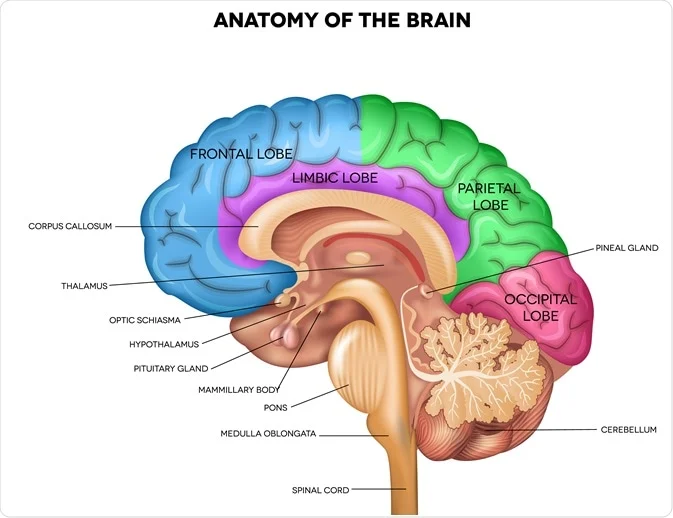
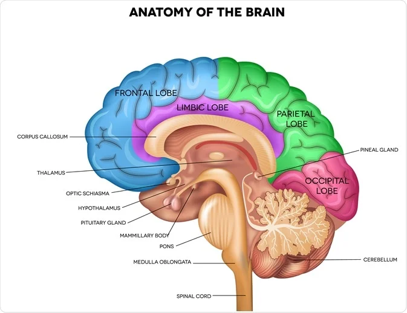

Contents Overview Function Anatomy Conditions and Disorders Care Additional Common Questions Overview What is the brain? Your brain is an essential organ. All of your emotions, sensations, aspirations and everything that makes you uniquely individual come from your brain. This complex organ has many functions. It receives, processes and interprets information. Your brain also stores memories and controls your movements. Your brain is one component of your central nervous system (CNS). It connects to your spinal cord, the other part of your CNS.
Your brain receives information from your five senses:
sight, smell, sound, touch and taste. Your brain also
receives inputs including touch, vibration, pain and
temperature from the rest of your body as well as autonomic
(involuntary) inputs from your organs. It interprets this
information so you can understand and associate meaning with
what goes on around you.
Your brain enables:
 

Your brain’s structure is complex.
It has three main
sections:
Each side of your brain has different lobes (sections). While all the lobes work together to ensure normal functioning, each lobe plays an important role in some specific brain and body functions:
Your cerebrum divides into two halves: the left and right
cerebral hemispheres. The two halves of the brain are
connected by nerve fiber bundles (white matter) called
your corpus callosum. The right side of your cerebrum
controls movement on the left side of your body and vice
versa.
Your left brain hemisphere is often the “dominant”
hemisphere — but this doesn’t apply to everyone. Most
people who are right-handed are usually left hemisphere
dominant. Some patients who are left-handed are right
hemisphere is dominant. Typically, the dominant hemisphere
is responsible for your speech and language functions.
Your non-dominant (which is the right hemisphere in most
individuals) is responsible for your spatial awareness and
processing of what you see.
About 1 in 10 right-handed people and about 1 in 3
left-handed people have dominance in the right hemisphere.
This means that their speech functions are mostly centered
in the right side of their brains. Many times this is a
normal variant but in some people with brain tumors or
epilepsy, the dominance can be shifted through a process
called brain plasticity.
A bony structure called your cranium surrounds your brain.
Your cranium is part of your skull. All the bones of your
skull protect your brain from injury.
Between your brain and skull, you have three layers of
tissue called the meninges:
Between your arachnoid and pia mater tissue is a clear substance called your cerebrospinal fluid (CSF). CSF also surrounds your spinal cord, which runs through the vertebrae (bones of your spine). CSF cushions and protects these vital nervous system organs.
Substances called gray and white matter make up your
central nervous system. In your brain, gray matter is the
outermost layer. It plays a significant part in your
day-to-day function.
White matter is your deeper
brain tissue. It contains nerve fibers that help your
brain send electric nerve signals more quickly and
efficiently.
Your brain contains several types of nerves. Nerves carry messages by sending electrical impulses back and forth between your brain, organs and muscles. The nerves in your brain are called cranial nerves.You have 12 pairs of cranial nerves from the brain to parts of your head and face. These nerves are responsible for specific sensations, such as hearing, taste or sight. White matter is the fiber bundles that connect brain cells. There are numerous white matter tracts that connect one area of your brain to another, as well as structures deep in your brain. These white matter tracts can also travel to your brainstem and spinal cord so that information can be relayed from your brain to communicate with the rest of your body and information from your body can travel to your brain.
Although most brain cells reside on the surface of your brain (called gray matter) and the cabling (white matter) is deep and connects various parts of your brain, there are some nuclei (collection of brain cells) that reside deep in your brain. They include:
For many years, scientists thought the human brain had 100
billion nerve cells (neurons). Today, we know the actual
number is closer to 86 billion.
Your brain contains two types of cells:
Within your thalamus sits a small structure called your hypothalamus. Your hypothalamus is part of your limbic system, which controls your emotions. It sends nerve signals to your pituitary gland. It helps control functions such as:
In your brain, you also have a pineal gland, which secretes the hormone melatonin. Melatonin controls how melanin gives your skin pigment. Melatonin also plays a role in regulating your sleep and wake cycles.
About 1 in 6 people have some type of brain condition. There are many types of brain disorders and conditions that vary in severity, including:
Some babies are born with a brain condition. Inherited conditions, genetic differences or injuries in the uterus or at birth can cause these conditions.
Injuries can lead to brain damage. When you experience a
blow to your head, you may suffer a traumatic brain injury
(TBI) or concussion.
Rarely, severe brain injuries may lead to a condition like
epilepsy or dementia. Many people heal from a concussion
or brain injury. Repeated head injuries can lead to
chronic traumatic encephalopathy (CTE), a condition that
causes progressively worsening thinking problems.
Some lifestyle habits can keep your brain healthier. To support your brain health, you may:
A strong social network can also improve your brain health. Healthy relationships can help decrease stress, lower your blood pressure and increase your life span.
You may also want to ask your healthcare provider: